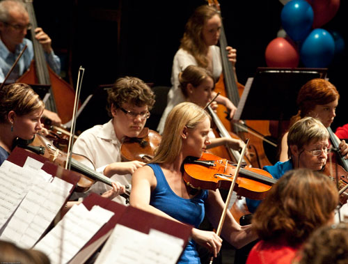

History of 2009

Home
2009
The Barrier Reef Orchestra proudly announced that Her Excellency, the Governor of Queensland Penelope Wensley agreed to be patron of our orchestra.
2009 was a year of highs and lows for the Barrier Reef Orchestra...
Our first concert in March was conducted by Richard McIntyre but we had pre-concert drama as our soloist had to retire due to injury. We fortunately were able to get Marcus Stocker at the last minute to play the Dvorak concerto. The program of Dvorak and Sibelius challenged the orchestra but the challenge and drama became greater due to the failure of the airconditioning at Riverway.
With the venue getting hotter and hotter during rehearsal we had to decide whether to go ahead or cancel the event. We decided to go ahead and most of our loyal audience stayed with us but it was hard going. Rick who is from cold Canberra certainly got a feel of the tropics that night as did everyone that attended.
Our mid year concert had to be cancelled due to the majority of the orchestra going away for a music camp. Very few cities the size of Townsville attempt to produce an orchestra and while Townsville is musically very strong we certainly stretched the music fraternity too far at that time.
Our October concert was to feature Ji Won Kim who had won the previous Australian Vocal and Concerto Competition here in Townsville. However, her blossoming career had her overseas at the time, and made her unavailable for that concert. She has since gone on to win the ABC’s Young Performer of the Year Award. We now look forward to hearing her play in our next concert in March 2010.
Our guest conductor Sean O’Boyle knew the perfect singers to do a “Last Night at the Proms” concert. This concert was a great success! It featured the Townsville Oratorio Choir, the full orchestra, Sean O’Boyle conducting and also included guest piper, Ray Sutton, guest tenor, Gregory Moore and Canadian soprano, Suzanne Kompass at the Civic Theatre.